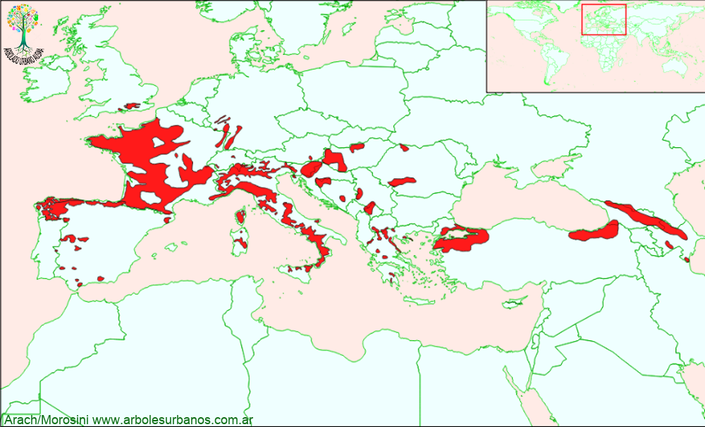

Click en las imágenes para ampliar

{kind=link}
{kind=link}
{kind=link}
{kind=link}
Pino negral, Carrasco, Pino laricio
NOMBRE CIENTÍFICO: Pinus nigra
FAMILIA BOTÁNICA: Pináceas
DESCRIPCIÓN GENERAL: Este árbol alcanza los 40 metros de altura. Su copa es densa y ampliamente cónica, sus ramas tiene una tendencia ascendente lo que hace que la copa se “aplane” con la edad Su corteza joven es de color gris claro, cuando envejece se divide en pequeñas placas.
HOJAS: Sus hojas son acículas de color verde reunidas en fascículos de a pares, de entre 10 y 16 cm de largo, con bordes finamente aserrados.
ESTRÓBILOS: Los masculinos son amarillos de hasta 2 cm de largo de forma aovado-cilíndricas de color amarillo. Las femeninas son ovales y están en de las ramas jóvenes. Estas estructuras aparecen en primavera, pero produce piñas de manera abundante cada 4 o 5 años, las piñas son de entre 5 y 8 cm de largo, son de forma simétrica y de color marrón claro
ORIGEN: Posee un área de distribución natural muy fragmentada atravesando Europa , es Europa desde España y Portugal, hasta Turquia y Ucrania, pasando por importantes poblaciones en Austria, Hungría, la ex Yugoslavia Francia e Italia sobre todo en la costa mediterránea, esta diversidad, dió origen a varias subespecies.
USOS: Posee una madera semidura y resistente a la putrefacción, por eso fue utilizado en construcciones navales y mástiles de embarcaciones. También se ha aprovechado su resina. Es una especie utilizada como ornamental
REPRODUCCIÓN: Se lo reproduce por semillas
PARTICULARIDADES: Debido a su ámplia dispersión natural se distinguen distintas formas, de las que se destaca la austríaca, por su copa compacta y su porte columnar. Se ha asilvestrado en varios paises del mundo tales como Canadá, Estados Unidos, Gran Bretaña y Australia.